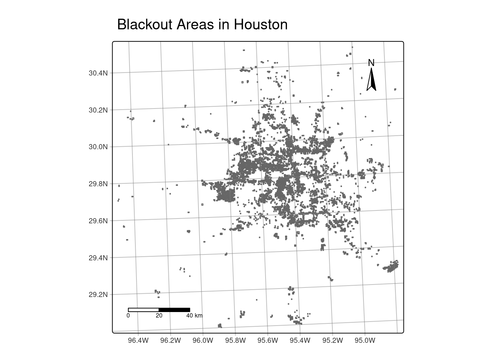
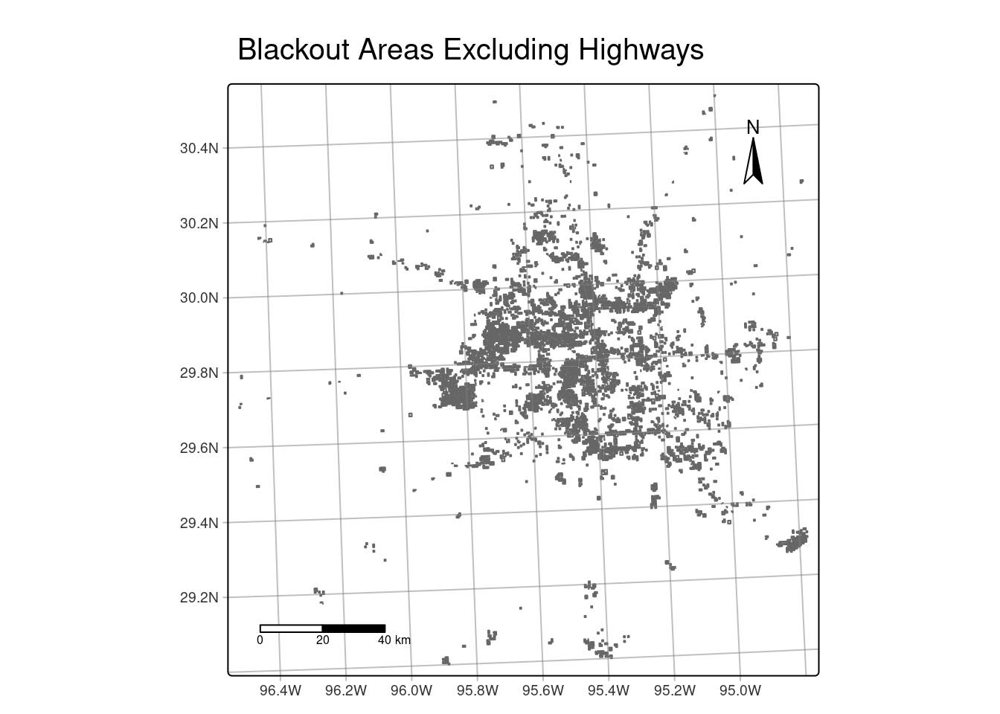
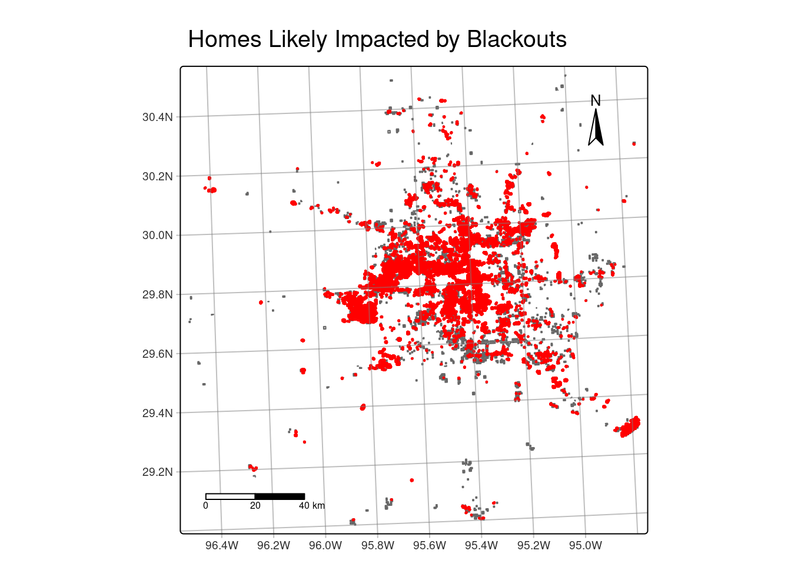
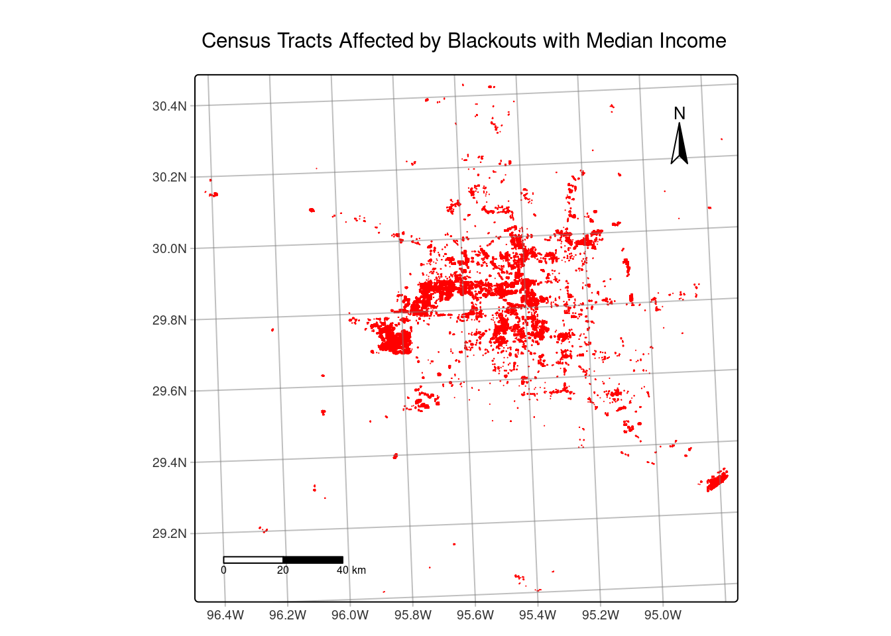
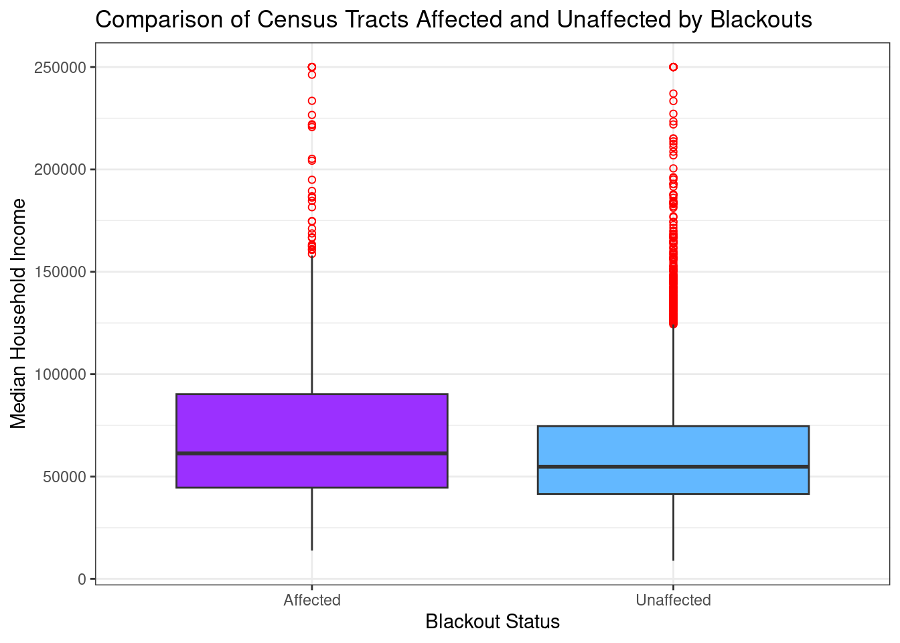

Code
library(sf)
library(tmap)
library(here)
library(terra)
library(stars)
library(tidyverse)library(sf)
library(tmap)
library(here)
library(terra)
library(stars)
library(tidyverse)feb_7_05 <- rast(here("data", "VNP46A1", "VNP46A1.A2021038.h08v05.001.2021039064328.tif"))
feb_7_06 <- rast(here("data", "VNP46A1", "VNP46A1.A2021038.h08v06.001.2021039064329.tif"))
feb_16_05 <- rast(here("data", "VNP46A1", "VNP46A1.A2021047.h08v05.001.2021048091106.tif"))
feb_16_06 <- rast(here("data", "VNP46A1", "VNP46A1.A2021047.h08v06.001.2021048091105.tif"))
roads <- st_read(here("data", "gis_osm_roads_free_1.gpkg"),
query = "SELECT *
FROM gis_osm_roads_free_1
WHERE fclass='motorway'")
buildings <- st_read(here("data", "gis_osm_buildings_a_free_1.gpkg"),
query = "SELECT *
FROM gis_osm_buildings_a_free_1
WHERE (type IS NULL AND name IS NULL)
OR type IN ('residential', 'apartments', 'house', 'static_caravan', 'detached')")
layer_names <- st_layers(here("data", "ACS_2019_5YR_TRACT_48_TEXAS.gdb"))
print(layer_names)
texas <- st_read(here("data", "ACS_2019_5YR_TRACT_48_TEXAS.gdb"), layer = "ACS_2019_5YR_TRACT_48_TEXAS")
income <- st_read(here("data", "ACS_2019_5YR_TRACT_48_TEXAS.gdb"), layer = "X19_INCOME")All coordinate reference systems match!# Merge tiles for each date to create single raster objects
feb_7 <- merge(feb_7_05, feb_7_06)
feb_16 <- merge(feb_16_05, feb_16_06)
# Compute the difference in nightlight intensity
diff_intensity <- feb_16 - feb_7
# Reclassify raster to identify blackout areas
rcl_matrix <- matrix(c(-Inf, -200, 1, # experience a blackout
-200, Inf, NA),
ncol = 3, byrow = TRUE)
reclassified <- classify(diff_intensity, rcl = rcl_matrix)
# Apply the reclassified mask to keep only significant changes (blackout areas)
blackout <- mask(diff_intensity, reclassified)
# Create a bounding box for Houston area
houston_bbox <- ext(-96.5, -94.5, 29, 30.5)
# Crop the blackout raster to the Houston bounding box
blackout_houston <- crop(blackout, houston_bbox)
# Convert cropped raster to polygons
blackout_houston_poly <- as.polygons(blackout_houston)
# Reproject the cropped blackout mask to EPSG:3083 (NAD83 / Texas Centric Albers Equal Area)
blackout_houston_proj <- project(blackout_houston_poly, "EPSG:3083")
# Convert SpatVector to sf for easier handling
blackout_houston_sf <- st_as_sf(blackout_houston_proj)
# Visualize the cropped blackout mask using tmap
tm_shape(blackout_houston_sf) +
tm_polygons() +
tm_title("Blackout Areas in Houston") +
tm_graticules(alpha = 0.5) +
tm_scalebar(position = c("left", "bottom")) +
tm_compass(position = c("right", "top"))
# Reproject highway data to EPSG:3083
roads_proj <- st_transform(roads, st_crs(blackout_houston_sf))
# Buffer highways by 200 meters
highway_buffer <- st_buffer(st_union(roads_proj), dist = 200)
# Exclude areas within 200 meters of highways
blackout_no_highways <- st_difference(blackout_houston_sf, highway_buffer)
# Ensure the resulting geometries are valid
blackout_no_highways <- st_make_valid(blackout_no_highways)
# Visualize the blackout mask excluding highways
tm_shape(blackout_no_highways) +
tm_polygons() +
tm_title("Blackout Areas Excluding Highways") +
tm_graticules(alpha = 0.5) +
tm_scalebar(position = c("left", "bottom")) +
tm_compass(position = c("right", "top"))
# Reproject residential buildings to match blackout CRS
buildings_proj <- st_transform(buildings, st_crs(blackout_no_highways))
# Find intersection between buildings and blackout areas
homes_in_blackout <- st_intersection(buildings_proj, blackout_no_highways)
# Visualize homes likely impacted by blackouts
tm_shape(blackout_no_highways) +
tm_polygons() +
tm_shape(homes_in_blackout) +
tm_dots(fill = "red", size = 0.1) +
tm_title("Homes Likely Impacted by Blackouts") +
tm_graticules(alpha = 0.5) +
tm_scalebar(position = c("left", "bottom")) +
tm_compass(position = c("right", "top"))
Estimated number of homes in Houston that lost power:167472# Reproject Texas geometries to match buildings and blackout CRS
texas_proj <- st_transform(texas, st_crs(homes_in_blackout))
# Select median household income column
median_income <- income %>%
select(GEOID, B19013e1)
# Fix GEOID
median_income$GEOID <- str_sub(median_income$GEOID, 8)
# Merge the income data with the census geometries
income_sf <- left_join(texas_proj, median_income, by = "GEOID")
# Perform a spatial join
census_tracts_affected_income <- st_join(homes_in_blackout, income_sf, join = st_intersects)
# Visualize the affected census tracts with median household income
tm_shape(census_tracts_affected_income) +
tm_polygons(col = "red") +
tm_title("Census Tracts Affected by Blackouts with Median Income") +
tm_graticules(alpha = 0.5) +
tm_scalebar(position = c("left", "bottom")) +
tm_compass(position = c("right", "top"))
# Identify census tracts affected by blackouts
census_affected <- income_sf %>%
filter(apply(st_intersects(income_sf, blackout_no_highways, sparse = FALSE), 1, any))
# Identify census tracts not affected by blackouts
census_unaffected <- income_sf %>%
filter(!apply(st_intersects(income_sf, blackout_no_highways, sparse = FALSE), 1, any))
# Add a status column to each dataset and combine them
combined_data <- bind_rows(census_affected %>%
mutate(status = "Affected"),
census_unaffected %>%
mutate(status = "Unaffected"))
# Create a boxplot comparing median household incomes by blackout status
ggplot(data = combined_data, aes(x = status, y = B19013e1, fill = status)) +
geom_boxplot(fill = c("purple1", "steelblue1"), outlier.color = "red", outlier.shape = 1) +
labs(x = "Blackout Status",
y = "Median Household Income",
title = "Comparison of Census Tracts Affected and Unaffected by Blackouts") +
theme_bw() +
theme(legend.position = "none")
This study investigates the areas in Houston, Texas, affected by blackouts by examining nightlight data and exploring the relationship between blackout events and median household income. The findings reveal that affected tracts exhibit a higher median income than unaffected ones, suggesting that wealthier areas may experience more frequent blackouts or feel their impact more significantly. However, the significant difference in sample sizes between the two groups may impact the data representation in the box plot. Limitations include potential inaccuracies from excluding specific weather conditions (wind speed, lightning, thunder, and heavy rainfall) and relying on census data, which may overlook smaller, unincorporated communities, potentially skewing the results.
| Data | Citation | Link |
|---|---|---|
| Night lights | NASA. (n.d.). Level-1 and Atmosphere Archive & Distribution System Distributed Active Archive Center - LAADS DAAC. NASA. | https://ladsweb.modaps.eosdis.nasa.gov/ |
| Houses | Geofabrik Download server. Geofabrik Download Server. (n.d.). | https://download.geofabrik.de/ |
| Roads | Geofabrik Download server. Geofabrik Download Server. (n.d.). | https://download.geofabrik.de/ |
| Socioeconomic | Bureau, U. C. (2024, October 22). American Community Survey (ACS). Census.gov. | https://www.census.gov/programs-surveys/acs |